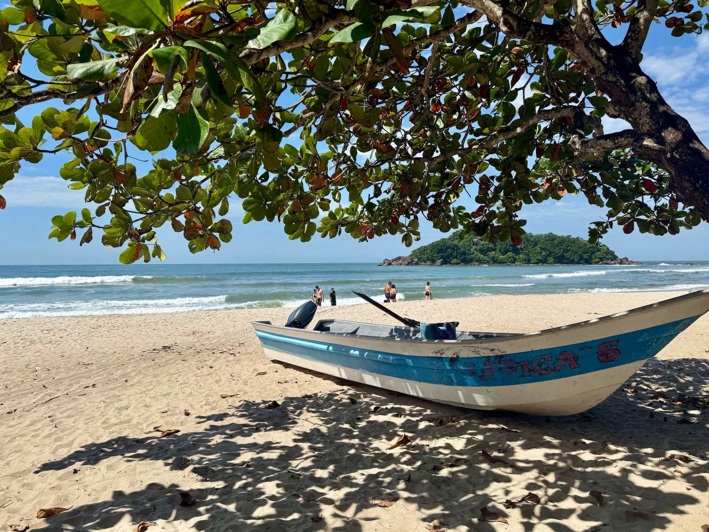

Bem-vindo ao blog Fulano
Aqui você encontra informações sobre minha vida pessoal e profissional.
| Tabela de preços | |||
|---|---|---|---|
| Aéreos | Roma | Veneza | Cancun |
| R$4.355,67 | R$5.097,96 | R$2660,04 | |
| Visite nossa agência e faça um orçamento | |||
Mapa da cidade de Guarujá
Imagem carregada de um servidor externo (requisito de recurso remoto):

Memória Férias 2025
Imagem armazenada em imagens/ferias/2024/:
